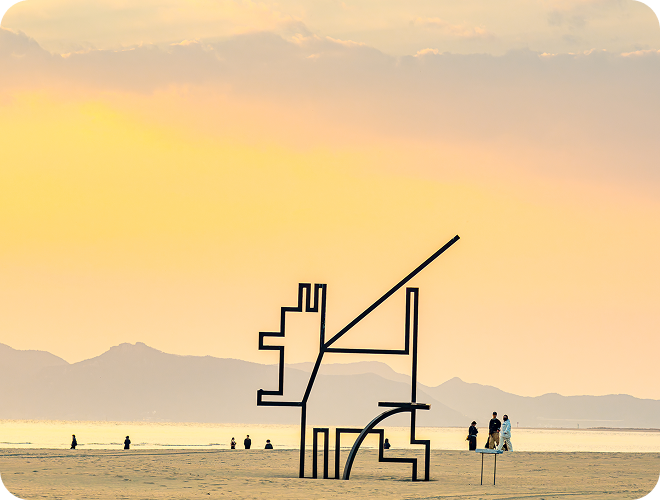
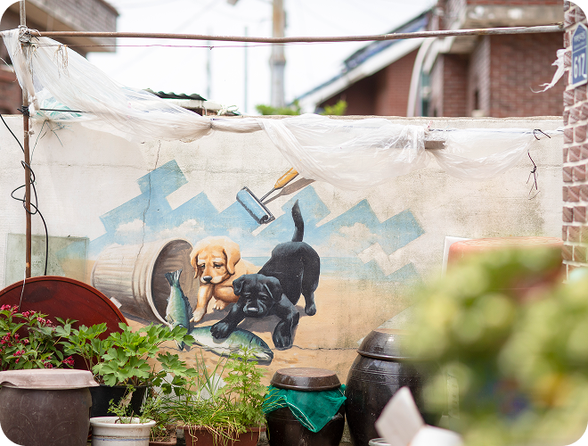

일상과 여행의 경계,
서쪽마실을 걷다
Sunset Begins Here, West Busan
멀리 떠나지 않아도 시작되는 특별한 순간
서쪽마실이 바라보는 여행
익숙한 일상에서 한 발짝 벗어나, 동네를 걷듯 가볍게 나서는 시간 속에서 여행은 자연스럽게 시작됩니다.
목적지가 분명하지 않아도 괜찮고, 계획이 조금 느슨해도 충분합니다.
목적 없이 걸어도
괜찮은 여행
서부산의 바다와 강, 골목과 마을은
느린 발걸음을 있는 그대로 받아들입니다

하루의 끝이
건네는 말
해가 기울며 노을이 하루의 끝을 알려주는 시간
서부산의 풍경은 비로소 여행자에게 말을 건넵니다

유명하지 않아
더 좋은 곳
이름보다 이야기가 먼저 쌓여온
사람들로 더 오래 기억되는 장소들이 있습니다